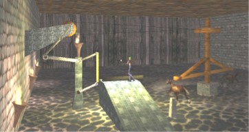
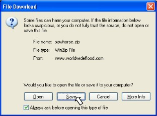
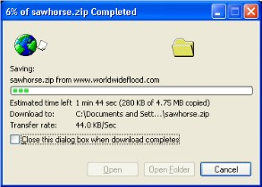
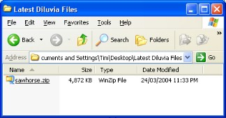
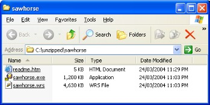

Noah, Noah's Ark, flood,
Bibl

HELP
for the DILUVIA Sawhorse trial.
WHAT IS IT ?
This scene is a rough prototype of an animal powered sawmill that might be
considered for Noah's ark.
For more details on the design of the real Diluvia scene see;
http://www.worldwideflood.com/ark/technology/animal_power.htm
HOW
TO GET IT
(Internet Explorer)
Click
on the link that looks like this >Horse
driven saw
Click
Save

Find a
place to put it. Then click Save. The file should begin to download. The amount
of time depends on the speed of your modem (or the intenet if you have a fast
modem). A basic phone line dialup will run at approx 4kB/Sec, which takes about
20 minutes to download. Expect about 10 times faster on ADSL. (shown below)

You
should have the zipped file sitting in the folder you specified. If it is not
the full 4.8 MB your download was faulty and must be repeated.

HOW
TO UNZIP IT (Winzip)
Assuming
you have Winzip installed on your computer, double click <sawhorse.zip>.
If you keep saying YES you will end up putting them in the folder
c:\unzipped\sawhorse
Which
unzips to gives you 3 files;

sawhorse.exe
= the game
sawhorse.wrs
= the game resource
readme.htm
= some instructions
You
can save these wherever you please, but they must stay together (well, actually
sawhorse.exe and sawhorse.wrs must stay together).
To
run the 'game', double click on sawhorse.exe. (The program reads data from
sawhorse.wrs and looks for it in the same folder.)
If
sawhorse.exe won't run then you have a problem I want to know about - especially
if your machine can run a 3D game ! Email me please.
PLAYING
IT.
The
Aim of the Game? There isn't one. It's a concept, so just walk around. Or use
your imagination and pretend you're playing a game. Better yet, come up with
some ideas and email me...
Use
the arrow keys to walk and turn
The
mouse will also turn the player.
F1
gives the function key menu
F7
changes the camera position.
F5
toggles the screen resolution.
F10
to quit.
Follow
the instructions at the top of the screen - pick up the lamp by getting close to
it. The lamp is designed to dim if you move quickly.
Walk
up the ramp to find out how to get the horses moving. You can make them speed up
by pressing up to 5 times. Can't slow them down because I couldn't be bothered
coding that bit since I know I can do it.
YEAH,
I KNOW
The
horses are too modern, the wood missed the blade, the guy has got modern pants
and green hair, the mechanism is a bit weird, the boiling pitch looks like lava
and there are too many naked flames for a sawmill. Don't worry, just trying out
some graphics.
PROBLEMS
No
flames: Your DirectX is too old. Update. The flames and dust need particle
feature supported by graphics card.
Too
dark; Yep, supposed to be dark. If the walls cannot be seen when standing still
then that's too dark. Just brighten the monitor a bit and c.
RECOMMENDED
COMPUTER
Something
not too ancient - maybe PIII 500 should suffice, and you'll need some graphics
acceleration, and DirectX 8 or newer. Oh, and I've assumed 1024 screen res which
is a rough match with these specs.
Thanks
for looking...
God
bless you
(He
has already - you're alive and you can read).
Tim
Lovett
25
March 2004